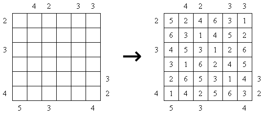
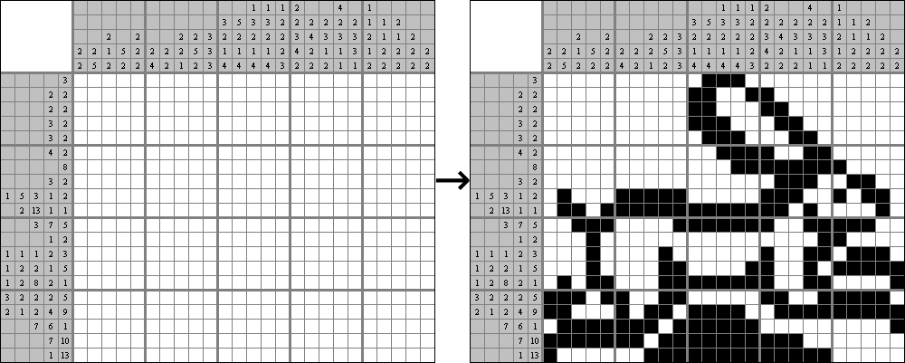
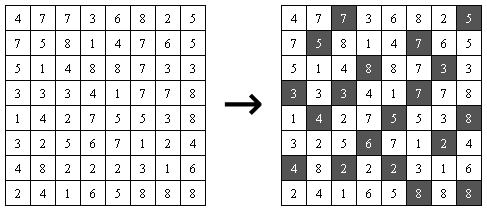
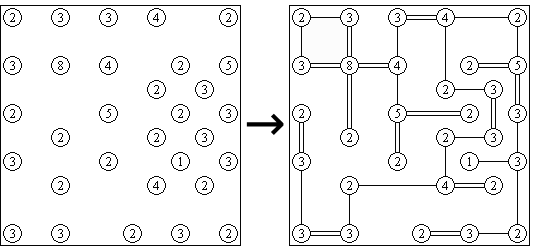
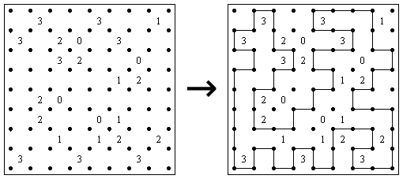
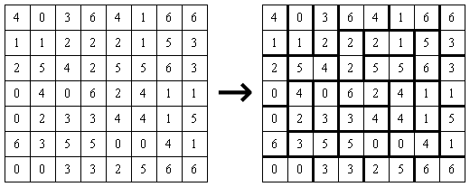
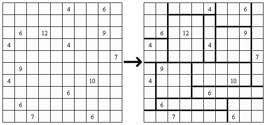
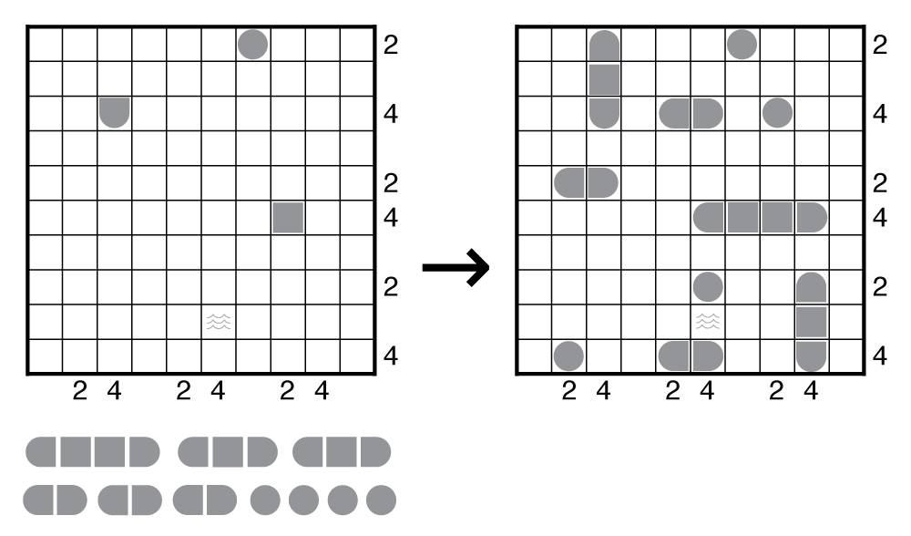
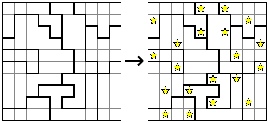
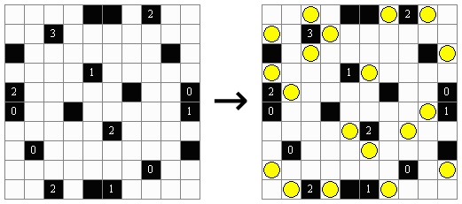

翻译自
https://puzz.link/list.html
https://www.cross-plus-a.com/puzzles.htm
填数
数独（Sudoku）
根据9×9盘面上的已知数字，推理出所有剩余空格的数字，并满足每一行、每一列、每一个粗线宫（3*3）内的数字均含1-9，不重复。
变种
对角线数独
锯齿数独
杀手数独
不等号数独
算数数独
等等
数和（Kakuro）
带有数字的格子为线索，将1到9的数字填入每个空格中。使得：
- 线索格的底部数字表示从该格子下方直至下一线索格之间数字总和。
- 线索格的右侧数字表示从该格子右侧直至下一线索格之间数字总和。
- 同行或同列的连续格子内的数字不能重复。

摩天楼（Skyscrapers）
在每个格子中填一个数字，要求：
- 数字必须介于 1 和 N 之间，其中 N 是表格的宽度。
- 每行和每列恰好包含每个数字。
- 网格内的每个数字代表一座建筑物，其高度等于该数字。网格外的数字表示从该方向在相应的行或列中可以看到多少建筑物，其中较高的建筑物将所有较低的建筑物隐藏在其后面。

涂色
数墙（Nurikabe）
将一些格子涂色使未涂色部分形成若干区域：
- 每个区域只包含一个数字。
- 数字表示包含该数字的区域的格子数。
- 有数字的格子不能涂色。
- 涂色部分不能形成2x2的正方形。
- 所有涂色格子连通。

数织（Nonogram）
将网格中的某些格子涂色，使其满足数字的描述：每行（列）前的每个数字，表示该行（列）中每组连续的涂色格子的数量。每行（列）中的每组之间至少有一个未涂色格子。

数壹（Hitori）
将一些格子涂色，使得：
- 涂色格子不能水平或垂直相邻。
- 行或列内的未涂色格子中的数字不能重复。
- 所有未涂色格子形成一个连通的区域。

摇啊摇（Shakashaka）
在某些空格中涂出一个占格子一半面积的直角三角形。
- 每个非涂色区域的形状必须是矩形。
- 格中的数字表示与该格正交相邻的格中包含三角形的数量。

连接
数桥（Hashiwokakero）
用桥将岛屿连接成一张网络，使得：
- 桥梁必须是两个岛屿之间的水平或垂直线，并且不能转弯。
- 桥梁不能相交。
- 每对岛屿之间最多有两座桥梁。
- 岛屿上数字表示连接到该岛的桥梁总数。

回路
数回（Slitherlink）
每道谜题都由一个矩形点阵组成，而该矩形框内还在不同位置包含了一些提示数字。游戏的目的是连接每个提示数字周围的点:
- 使得数字四周的线段的数目与该数字相等。
- 在没有数字的地方，线段的数目没有限制。
- 所有线段可以形成一条连续的回路并且不能交叉和分叉。

分区
数邻（Dominosa）
将网格分成若干区域，使得：
- 每个区域内有两个正交相邻的数字形成数对。
- 每两个数对不重复。

数方（Shikaku）
在网格分成若干矩形。使得：
- 每个矩形恰好包含一个数字。
- 数字表示矩形的格数。

放置
战舰（Battleship）
将舰队中的所有船放入网格中。每只船可以旋转或镜像。
- 所有船必须使用且仅使用一次。
- 每两艘船不能正交或对角相邻。
- 网格外的数字表示该行（列）中有多少个单元格被船舶占据。
- 题目中已经给出了某些船段及其方向。灰色单元格代表形状未知的船段。
- 带有水标记的格子不能放入船段。

星之战（Star Battle）
在某些格中放入星星。
- 星星不能水平、垂直或对角相邻。
- 网格外会有的数字提示每行、每列和轮廓区域中有多少颗星星。

数灯（Light Up / Akari）
将灯泡放置在空格子中，每个灯泡会照亮其所在行和列，涂色格子是墙，会阻挡光线。要求：
- 整个网格都被照亮。
- 每两个灯泡不会互相照射。
- 数字表示必须在其正交相邻的四个格子上放置多少个灯泡。

待续